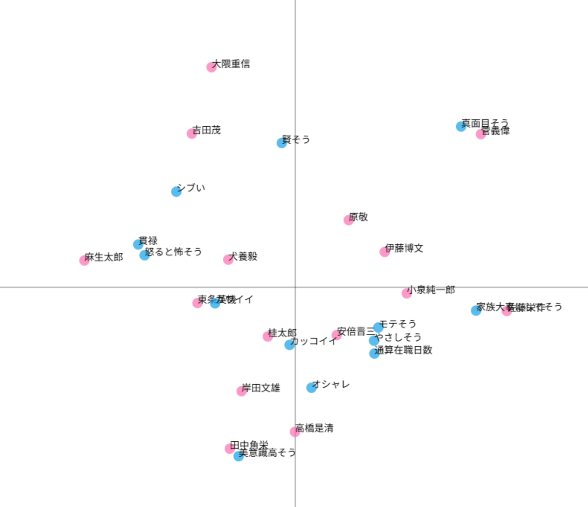
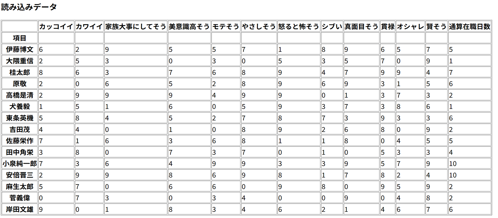
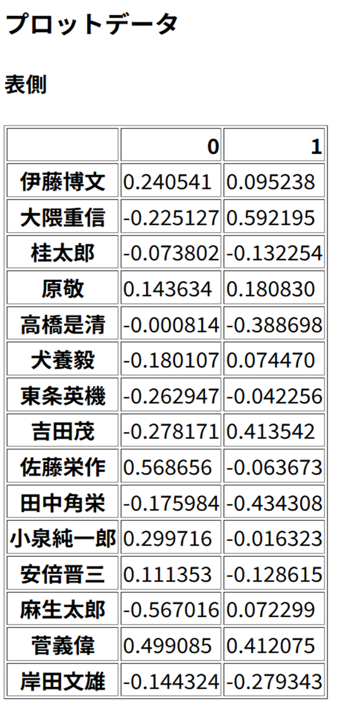
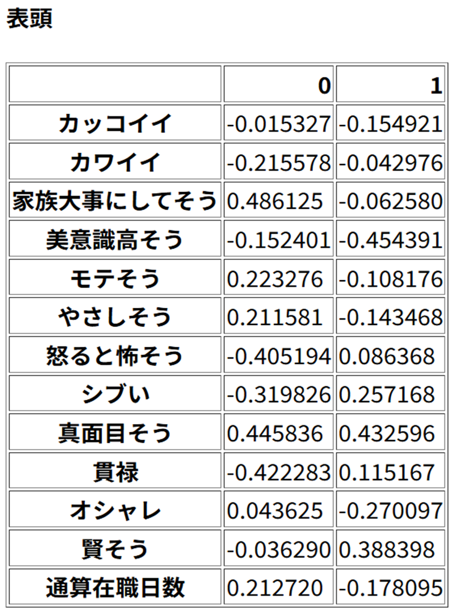
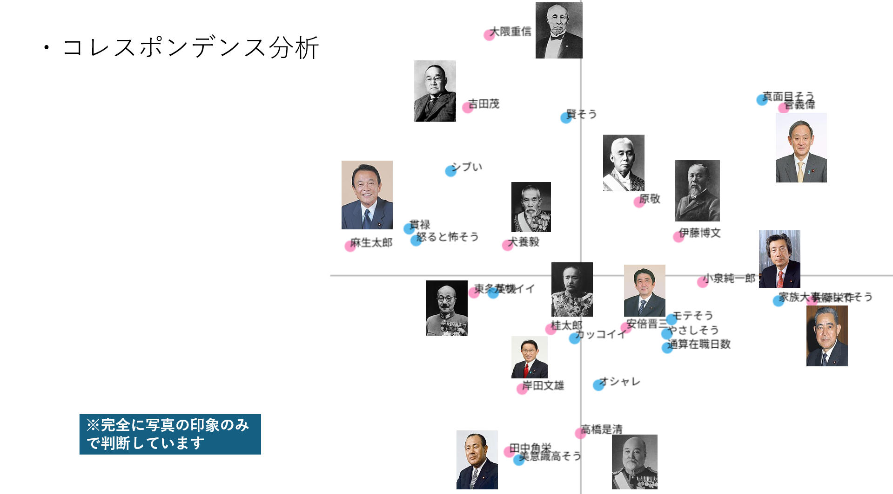
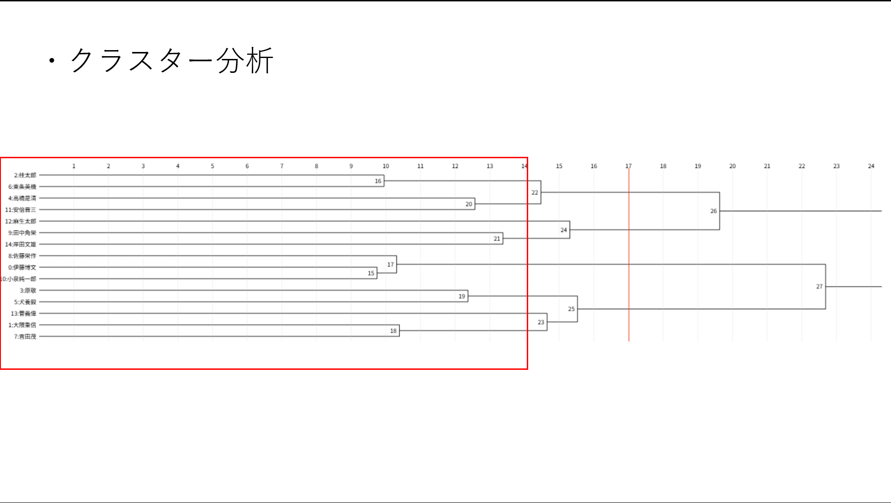
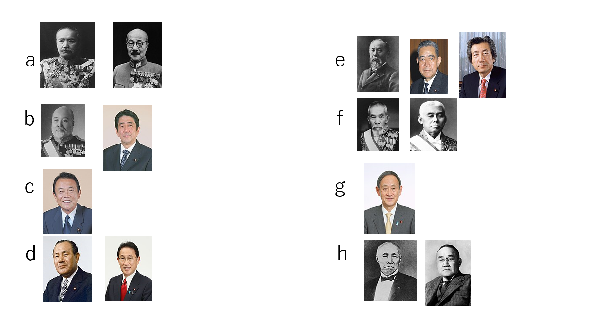

散文図

csvファイル



分析
累積寄与率が約14％で低かったもののいい感じにグループわけができたような気がした。
まず一番目に止まるところは、かわいいとかぶっている東条英機である。またかっこいいとの間にいる桂太郎も
同じような感じがする。かわいいに全振りしているため東条英幾は桂太郎と違いより可愛いいに近くなっている。
また、もう一つ目立つものといえば菅義偉だ。彼はほかの日とは違い一段と真面目さのイメージが強くそれが強く分析にも反映されたと考えれる。


